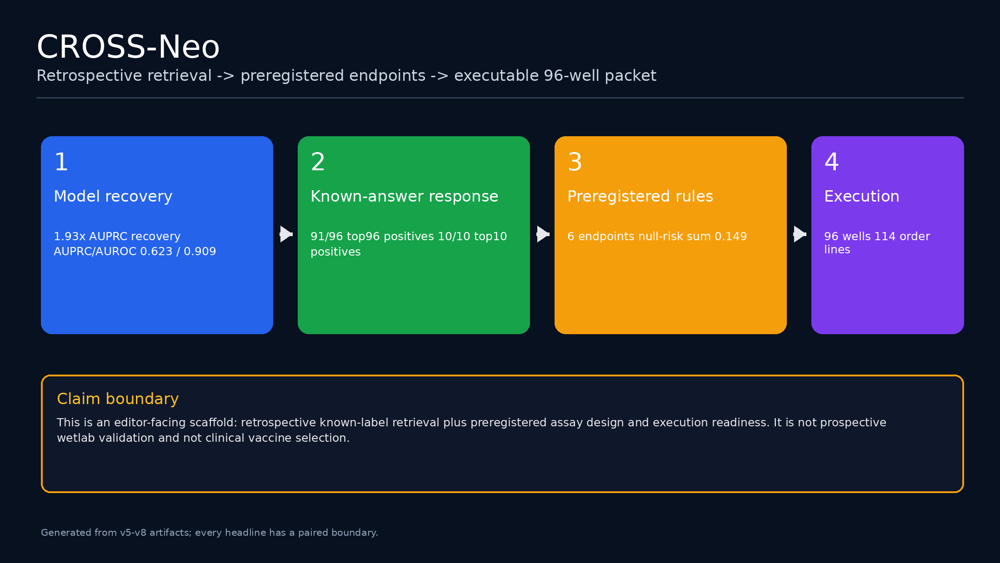
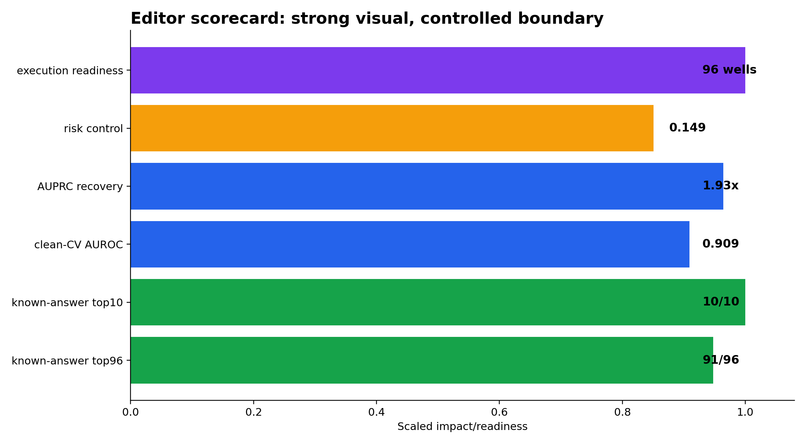
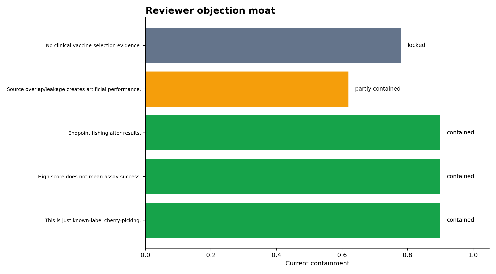
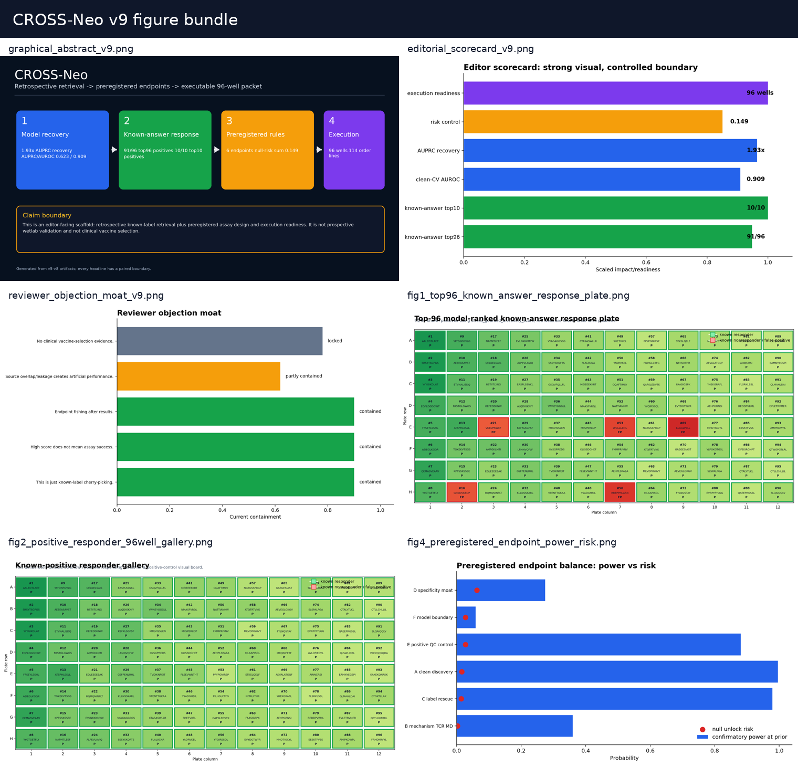
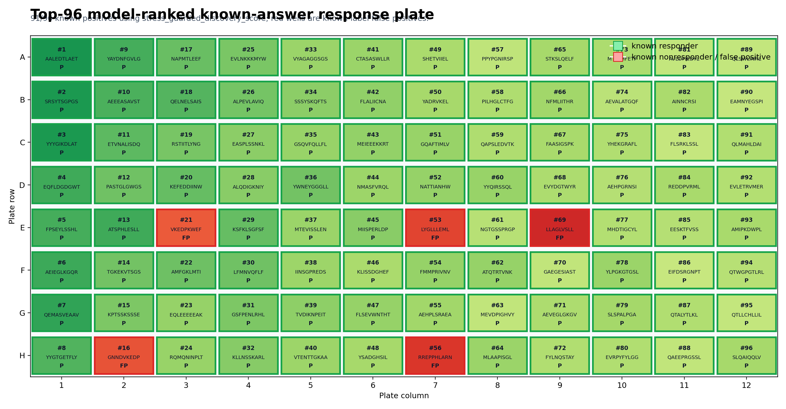

01Pitch figures






02Five-slide scaffold
| slide | title | headline_metric | talking_point | claim_boundary |
|---|---|---|---|---|
| 1.000 | CROSS-Neo in one line | 91/96 known-answer positives | Retrospective retrieval, preregistered assay decision rules, and execution packet are now connected. | Do not call this prospective validation. |
| 2.000 | Why the visual lands | 94.8% top96 known-label precision | The model-ranked board is nearly all green, with five visible red wells. | Known-answer retrospective labels only. |
| 3.000 | Why it is not hand-wavy | 0.149 confirmatory null-risk sum | Endpoint rules and confirmatory thresholds are frozen before assay results. | Assay-statistics package, not clinical trial evidence. |
| 4.000 | Why it can be executed | 96 wells / 114 order lines | The handoff includes candidate manifest, result sheets, decision worksheet, and interpreter. | Lab-facing scaffold until real results exist. |
| 5.000 | Why reviewers cannot dismiss it as cherry-pick | failure wells exported | False positives, overlap, claim boundary, and endpoint fishing are explicitly surfaced. | Transparency layer, not proof of biological mechanism. |
03Reviewer objection map
| reviewer_objection | current_answer | residual_risk | status |
|---|---|---|---|
| This is just known-label cherry-picking. | Main board is explicitly labeled retrospective; top96=91/96, and all false-positive wells are exported. | Needs prospective wetlab to become validation. | contained |
| High score does not mean assay success. | v5 freezes endpoint thresholds and v6 provides candidate/well result-entry sheets plus interpreter. | Assay calibration still required. | contained |
| Endpoint fishing after results. | Confirmatory thresholds are predeclared; null-risk sum=0.149. | Multiple endpoints remain screening-grade, not pivotal clinical trial. | contained |
| Source overlap/leakage creates artificial performance. | Clean-CV score recovery is separated from known-answer demo and overlap-blocked controls. | Prospective independent cohort still needed. | partly contained |
| No clinical vaccine-selection evidence. | The clinical claim is explicitly locked in the evidence matrix. | Clinical utility requires patient-level validation. | locked |
04Claim boundaries
Use these as guardrails. They are intentionally stronger than the visuals.
| allowed_claim | required_qualifier | forbidden_upgrade |
|---|---|---|
| CROSS-Neo retrieves known-answer positive peptide-HLA examples at high top-k precision. | retrospective known-label benchmark | validated neoantigen vaccine candidate discovery |
| CROSS-Neo has a preregistered assay decision scaffold. | pre-assay endpoint plan | wetlab-confirmed immunogenicity |
| CROSS-Neo can export a 96-well execution packet. | operational handoff | completed experiment |
| The current pipeline has visible false-positive and leakage controls. | reviewer-safeguard transparency | absence of all bias |
| Clinical vaccine selection remains future work. | locked claim boundary | patient treatment recommendation |
05Figure manifest
| figure_file | source_version | role | safe_use |
|---|---|---|---|
| graphical_abstract_v9.png | v9 | first-slide graphical abstract | editor pitch |
| editorial_scorecard_v9.png | v9 | metric scorecard | editor pitch |
| reviewer_objection_moat_v9.png | v9 | objection/answer map | reviewer defense |
| figure_bundle_mosaic_v9.png | v9 | main visual bundle mosaic | visual overview |
| fig1_top96_known_answer_response_plate.png | v7 | known-answer top96 plate | retrospective demo |
| fig2_positive_responder_96well_gallery.png | v7 | known-positive gallery | positive-control design |
| fig4_preregistered_endpoint_power_risk.png | v8 | endpoint power/risk | preregistration |
| fig1_execution_packet_scale.png | v6 | execution packet scale | lab handoff |
| fig3_evidence_to_claim_matrix.png | v8 | evidence-to-claim matrix | claim boundary |
Output directory: /home/seungho/personal/THCA_data_analysis/project/results/cross_neo_kaggle_winner_playbook_2026_05_10/editor_pitch_v9_2026_05_10
Live deploy status: skipped: permission/path unavailable